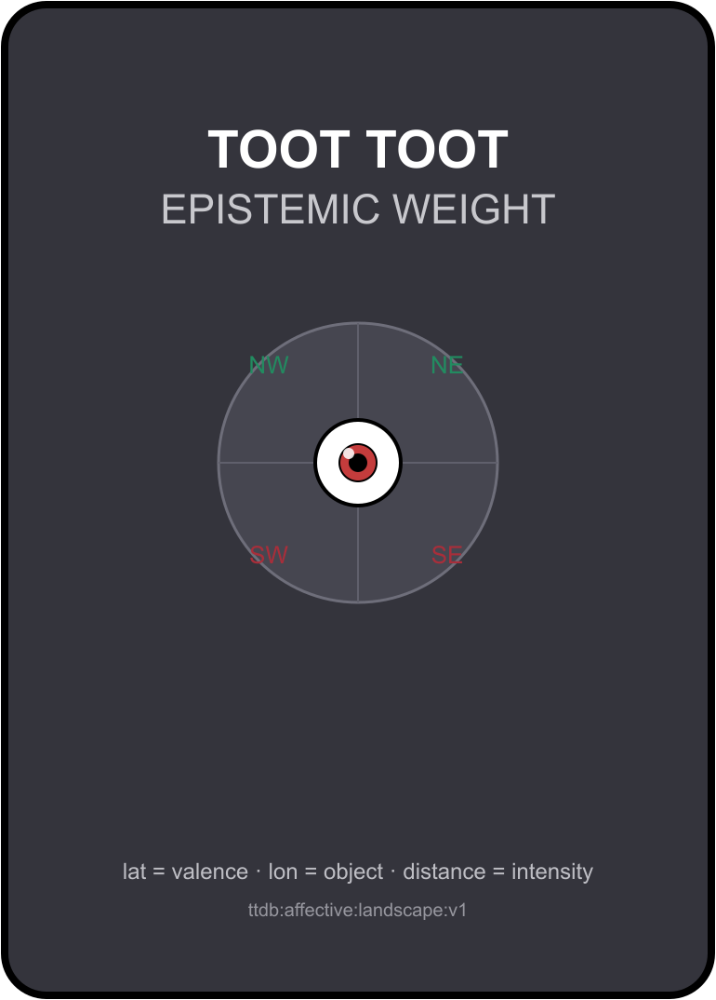
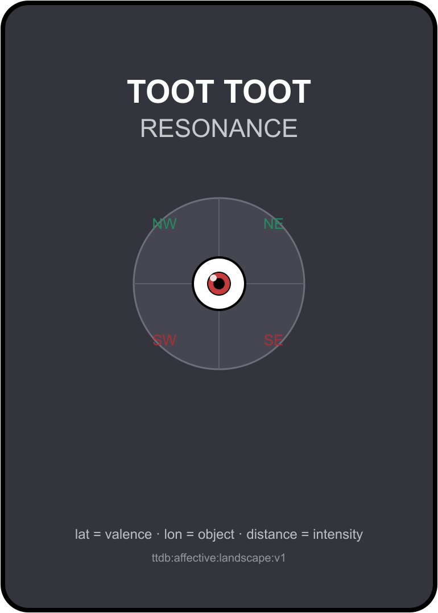

Story games grounded in the Toot Toot Engineering Locus Framework — every deck, board, and rule generated from the Feelings TTDB.

Carry your beliefs through the story — Suns and Eclipses judge them at the Testament. Cooperative, 2–5 players. A digital table: the app moves the pieces, the players keep the rules.
also: print & play play in browser →
Grow the affective field one printed edge at a time and lay a marker-chain from the story's Opening to its destination. Cooperative, 1–5 players. Rules-enforced: every placement is a real TTDB edge.
also: print & play play in browser →The rhythm sibling — print & play only, for now.
the boxThe transformation sibling — print & play only, for now.
the box